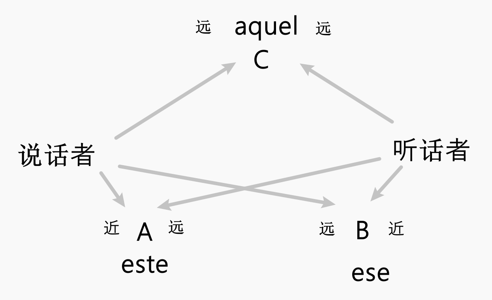

西班牙语 | 代词，系动词，冠词
主格人称代词
| 单数 | 复数 | |||
|---|---|---|---|---|
| 第一人称 | yo | 我 | nosotros/nosotras | 我们 |
| 第二人称 | tú | 你 | vosotros/vosotras | 你们 |
| 第三人称 | él | 他，它 | ellos | 他们，它们 |
| ella | 她，它 | ellas | 她们，它们 | |
| usted | 您 | ustedes | 诸位 | |
usted和ustedes是第二人称的礼貌式。在拉美，ustedes取代vosotros和vosotras
定冠词
| 单数 | 复数 | |
|---|---|---|
| 阳性 | el | los |
| 阴性 | la | las |
- 位置：放在名词前，与其保持性数一致
- 功能：表示特指，约等于英语的
the - 注意：区分定冠词
el和主格人称代词él
不定冠词
| 单数 | 复数 | |
|---|---|---|
| 阳性 | un | unos |
| 阴性 | una | unas |
- 位置：放在名词前，与其保持性数一致
- 功能：表示泛指，约等于英语的
a，an
定冠词和不定冠词的用法
-
作主语的名词前一般加冠词，除非专有名词或者称呼
La chica es Ana. 这个女孩是Ana
称呼不加：Ana, vamos a comprar。安娜，我们去逛街吧
-
职业前面一般无冠词，如果职业后有形容词则前面加冠词
Ella es cantante. 她是一位歌手。
Ella es una cantante joven. 她是一位年轻的歌手。
-
为了方便读音，部分阴性单数名词用阳性单数定冠词
el修饰（满足a或者ha开头，且重音在a上）如：el agua，el ala，el alma，el hada，la abitación（重音不在a，所以不用变）
如：las aguas，las alas，las almas等
指示形容词
- 需要和所修饰的名词保持性数一致，放在名词前（指示形容词+名词）
- 一个名词不能同时被冠词和指示形容词修饰
- ese系列一般不用来修饰人，往往有轻蔑的口吻
| 单数 | 复数 | |||
|---|---|---|---|---|
| 阳性 | 阴性 | 阳性 | 阴性 | |
| 这个，这些（距离 听话者远，说话者近） |
este | esta | estos | estas |
| 那个，那些（距离 听话者近，说话者远） |
ese | esa | esos | esas |
| 那个，那些（距离 听话者和说话者都远） |
aquel | aquella | aquellos | aquellas |

指示代词
- 大部分同指示形容词，部分词可以带重音，多了中性形式（只有单数形式）
- 如：Esta es mi case. 这是我的家
- 指示代词和所指代的名词保持性数一致，中性单数用于指代抽象的概念或者事物
- 如：Eso es amor. 这就是爱
- 指示代词单独使用，指示形容词必须和名词一起使用
| 单数 | 复数 | ||||
|---|---|---|---|---|---|
| 阳性 | 阴性 | 中性 | 阳性 | 阴性 | |
| 这个，这些（距离 听话者远，说话者近） |
este | esta | esto | estos | estas |
| 那个，那些（距离 听话者近，说话者远） |
ese | esa | eso | esos | esas |
| 那个，那些（距离 听话者和说话者都远） |
aquel | aquella | aquello | aquellos | aquellas |